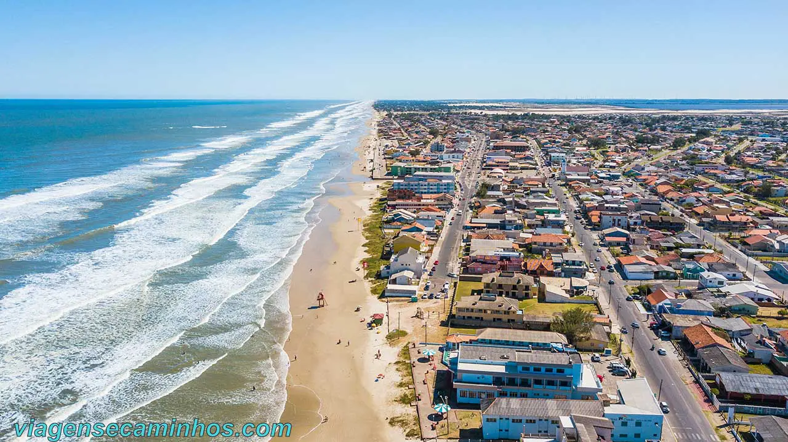
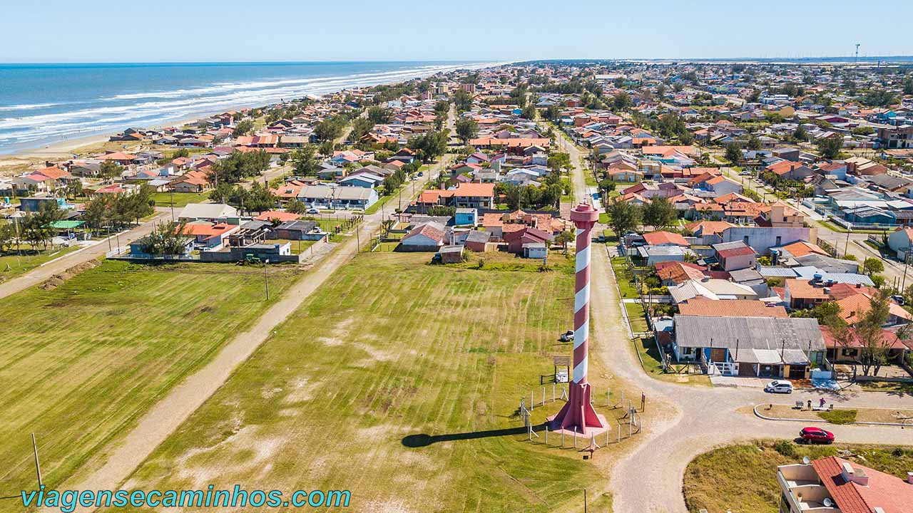
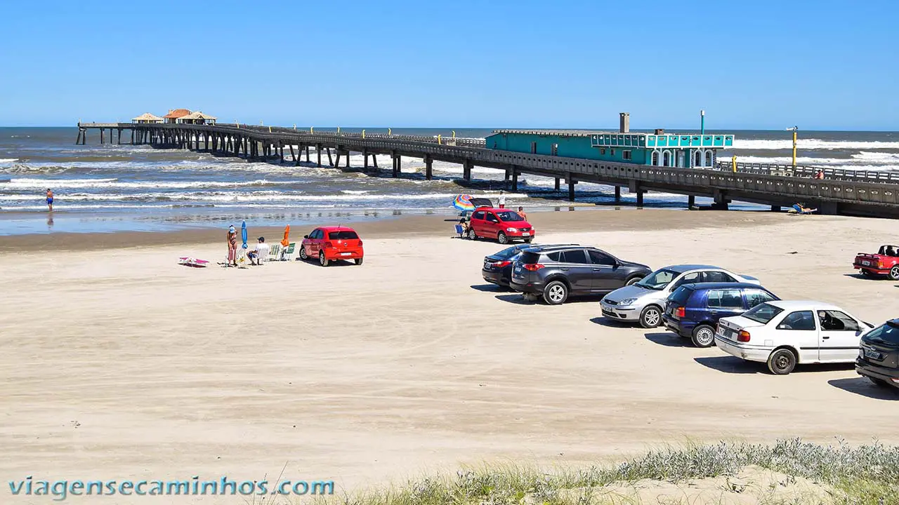

conheça cidreira
Cidreira, no litoral gaúcho, é uma escolha encantadora para quem busca relaxamento e beleza natural. Com quilômetros de praias de areia dourada e mar refrescante, é o destino perfeito para curtir o sol, fazer caminhadas à beira-mar e aproveitar a brisa tranquila. Além disso, a cidade oferece um ambiente acolhedor, com opções de lazer e gastronomia que combinam a simplicidade e o charme do litoral sul. Se você busca um refúgio acessível e relaxante, Cidreira é uma ótima opção para se desconectar e desfrutar momentos inesquecíveis.
Ler mais

farol de cidreira
Construído em 1933, o farol de Cidreira tem 30 metros de altura, localizado entre os balneários de Salinas e Nazaré. Funcionou por 49 anos, com querosene, somente em 1982 passou a funcionar com energia elétrica. Sua iluminação tem alcance de 30 Km.
Em frente ao farol há uma grande área de gramado. Fica na Av. Fausto Borba Prates, 5216, praia de Nazaré.
Ler mais

plataforma de pesca em cidreira
A plataforma de pesca de Cidreira tem 400 metros de extensão que avança mar adentro, além de 40 m que formam um “T”, na ponta. É utilizadas por pescadores e para observação do público em geral. A área próxima da plataforma é uma das preferidas dos surfistas.
Neste ponto os visitantes costumam estacionar o carro à beira mar.
Ler mais